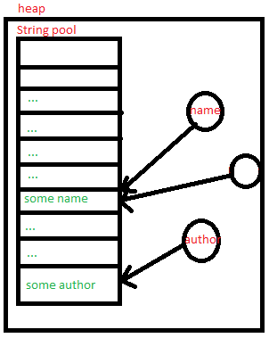

The main difference is String is IMMUTABLE and StringBuffer is MUTABLE.
So, what is this "immutable / mutable" stuff?
The general meaning of immutable is: Cannot be changed over time. And when are reading about String class in java textbooks or in
java sites they also say the same thing.
Thus, it means strings created using String class cannot be changed over time. We will start our discussion with the String class first.
Now according to the definition it means line 2 in this following code is invalid.
Code
Now try to compile and execute this code. Then see what is printed to the console. As you were expecting and according to the
definition "karthik" must be outputted. But strangely the output will be "krishna".
In the first line I just created a variable named "name" and I initialized it with the value "karthik". This is looking code. In the 2nd
like I re-initialized the value with "krishna". According to the definition of immutable the second line must silently fail or show a
compile time or run time exception. But amazingly we don't get any exceptions. Again according to the definition the 3rd like must
print "karthik" as output. But amazingly it prints "krishna".
So what is happening actually? Now we need to take close a look at the virtual machine. What actually the java virtual machine tries
to do when you create a string using String class and when you try to re-instantiate the string?
JVM actually maintains a string pool in the heap. Heap is nothing but a part of the memory in which your JVM is running.
Every application needs some main memory (RAM) to run, so does java. For example VLC Media Player needs some RAM space to run.
JVM also needs some RAM space to run.
What is string pool? What is a pool? A pool is a collection of something. For example consider a swimming pool. It is a collection of
water drops. Similarly string pool is a collection of strings. So all strings declared in your application will be stored in the
string pool. Regardless of which class you used to create the string (whether String or StringBuffer or StringBuilder), all strings
are stored in the string pool.

See the following diagram. This is how strings are stored internally.
Now back to our program again. When the VM sees the first line it creates a string called "karthik" by following these steps:
Create a string called "karthik" in the pool.
Create a variable called "name" somewhere in the heap and make that variable refer to this string location.
When the VM encounters the second line it follows these steps:
Create a string called "krishna" in the pool.
Destroy the variable called "name".
Create a variable called "name".
Make the variable point the new value "krishna".
This is how java creates string variables, assigns values, reassign's values. This is somewhat awkward, right? Some TIME is wasted.
One thing you have to understand here is the string "karthik" remains in the string pool only.
Consider few examples:
name + "chaitanya";
This will create a new string in the string pool. But does not reinitialize the string "name"
name = name + "chaitanya";
This creates a new string in the string pool and reinitializes the "name" variable
name.replace('c', 'n');
This will also create a new string in the string pool but will not be reflected in the "name" variable
name = name.replace('c', 'n');
This creates a new string in the pool and the changes are now reflected in the "name" variable.
Try executing this program and you will see unexpected outputs and you can understand the String class clearly.
Code
What do you think line 5 and line 7 would print? We expect it to print "krishna chaitanya" and "krishnn chnitnnyn".
But as usually it prints "krishna" and "krishna".
Let me explain what happened in 4th line:
The VM sees the 4th line.
Takes the existing value of "name" from the string pool.
Now appends "chaitanya" to the original value.
Creates a new string in the string pool called "krishna chaitanya".
Since I dint assign the new value to the "name" variable, when I print the name variable it prints "krishna" instead of "krishna chaitanya"
Let me explain what happened in 6th line:
The VM sees the 6th line.
Takes the value "krishna" from "name" variable.
Replace all characters matching 'a' with 'n'.
Creates a new string called "krishnn" in the string pool.
Since I dint assign the new value to the "name" variable, when I printed the name variable it printed "krishna" instead of "krishnn".
Now I will rewrite the same program to reflect the values in the name variable.
Code
This time the 5th and 7th line prints the result as we expected. "krishna chaitanya" and "krishnn chnitnnyn".
Let me explain what happened in 4th line:
The VM sees the 4th line.
Takes the existing value of "name" from the string pool.
Now appends "chaitanya" to the original value.
Creates a new string in the string pool called "krishna chaitanya".
Then deletes the variable "name".
Creates a variable "name" again.
Makes the variable "name" to point to "krishna chaitanya" string.
Let me now explain what happened in 6th line:
The VM sees the 6th line.
Takes the value "krishna chaitanya" from "name" variable. (remember the value now is "krishna chaitanya" in the variable "name")
Replace all characters matching 'a' with 'n'.
Creates a new string called "krishnn chnitannyn" in the string pool.
Deletes the variable "name".
Create a variable called "name" again.
Makes the variable "name" point to "krishnn chnitannyn" string.
Since the VM is spending lot of time in creating the new strings, deleting the variable and creating the same variable again, so much
time is wasted. This is awkward so we opt for StringBuffer.
When you create a string using StringBuffer java does not destroys the variables when you try to reassign another value to the variable.
StringBuffer has convenient methods like append, delete, deleteCharAt, insert, reverse, replace and many more. All these methods will
not create a new string; instead they work in the same pool location where the actual string resides.
This is the main difference between String and StringBuffer.
Another noticeable thing about String class is when you create two variables which hold the same string; the VM does not create 2
separate strings. It creates only one string and 2 variables. These variables will point to the same string. You can see this is the
string pool picture which I showed above.
Consider this example:
Code
This program will output "true". In this program we are creating two variables "var1" and "var2". Both variables have same string
assigned to them. Java will not create two string "karthik" and "karthik" in the string pool. There will be only one string "karthik" and both
the variables point to the same string "karthik". That is why when I compared the objects "var1" and "var2" using the "==" operator it
outputted true.
Note: In line 5 I am not comparing the values "karthik" == "karthik". I am comparing the variable references. If you want to compare values
use equals() method. Eg: var1.equals(var2) or var2.equals(var1). == and equals() are different. The former compares objects, while the
later one compares the contents.
Now what if I want the VM to create two strings "karthik" one for each variable "var1"and "var2"?
Use the operator.
Code
This time the VM creates two new strings "karthik" and "karthik". "var1" and "var2" will be pointing to different locations. So this program
will output false.